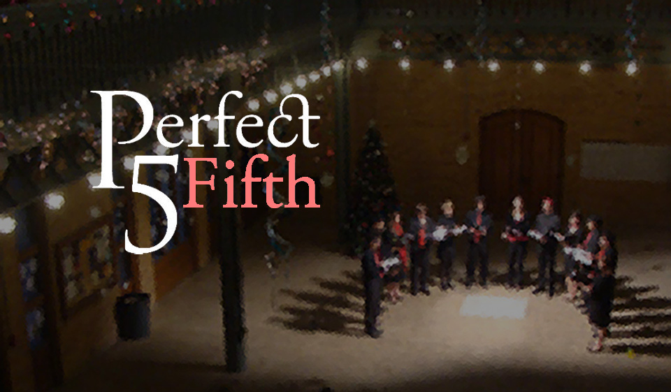

|  |
SAVE THE DATE! Perfect Fifth's Winter Concert is on Saturday, December 6th! Join us for a wonderful evening of music that spans through the ages! The concert will be located at the beautiful First Church of Christ Scientist, and be sure to purchase your tickets online and RSVP to the Perfect Fifth Winter Concert on Facebook. It's sure to be an amazing evening and we would love to see you there!
We welcome our new members of the semester! Congratulations to Elizaveta Tremsina, Moira Davis, Andrea Soung, Canny Lam, Nathaniel Hodson, and Jeremy Reinhard! We're super excited to have them aboard, and watch for them in our upcoming performances.
Thus, we have unfortunately ended auditions for the Fall 2014 semester. Check out the Auditions page, and come back in mid-January for more information about how you can audition for us then!
Make a gift to UC Choral Ensembles by going to UC Berkeley's Give to Cal webpage. If you would like to make a donation to Perfect Fifth, please notate our group with the gift. If you would like to send us a check, please make it out to "UC Regents-UCCE Perfect Fifth" and mail it to: Perfect Fifth, University of California Choral Ensembles, 72 Cesar Chavez Center, Berkeley, CA 94720. We graciously accept any and all donations, and are always thankful for your kind support.
Have you ever wanted to sing a cappella music, but can't seem to find a group that does everything from Renaissance madrigals to 20th century compositions? Then Perfect Fifth is perfect for you! We are always looking for experienced singers who love to make music as much as we do. Please see our Auditions page for more information.